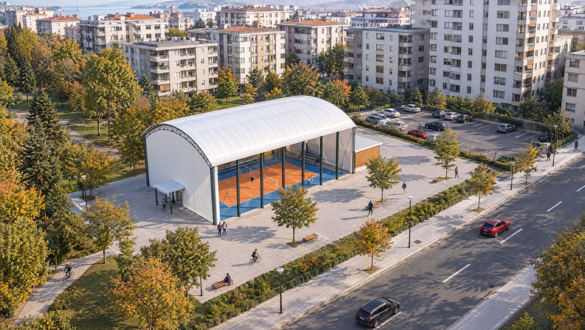

Volleyball Hall
Structure, light and context for a sports hall. Alternative designs for a 700 m² programme.
Explore project
Scope of work
Spatial programming, alternatives across three structural systems, 3D modelling and visualisation for a single-court hall and service spaces. AI-assisted concept exploration is part of the process. This is an unbuilt preliminary design; the surrounding context in the image is illustrative.
3D · Architectural design · AI visualisation